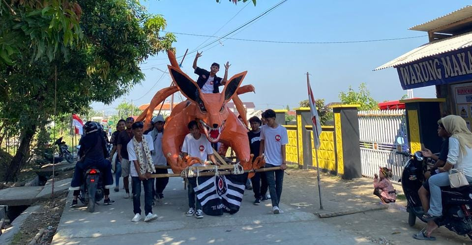

Penyuluhan Kesehatan Ibu & Anak
14 Juli 2025 • 👤 Administrator • 👠1.024 kali
Kegiatan posyandu dan penyuluhan gizi balita di balai desa diselenggarakan oleh Pemerintah Desa Tegongan bekerja sama dengan Puskesmas Tanjung.
Penyuluhan ini bertujuan meningkatkan kesadaran orang tua akan pentingnya kesehatan ibu hamil dan tumbuh kembang anak, serta menyediakan layanan kesehatan dasar secara gratis.